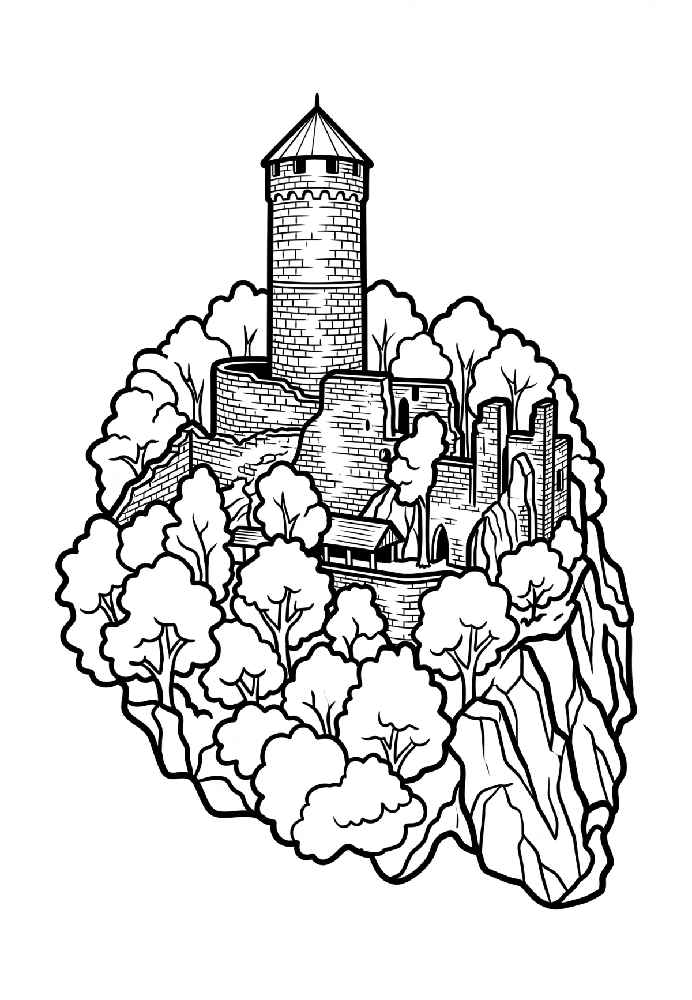

Hrad Helfštýn
Olomoucký kraj · 335 m n. m.

historická památka · #020
Helfštýn (též Helfštejn, dříve též Helštýn, německy Helfenstein [helfn̩štaɪ̯n]) je zřícenina hradu u Týna nad Bečvou v okrese Přerov v Olomouckém kraji. Od roku 1963 je chráněn jako kulturní památka ČR. Hrad je ve vlastnictví Olomouckého kraje, památku spravuje a provozuje Muzeum Komenského v Přerově. Hrad byl založen na počátku čtrnáctého století.